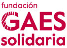
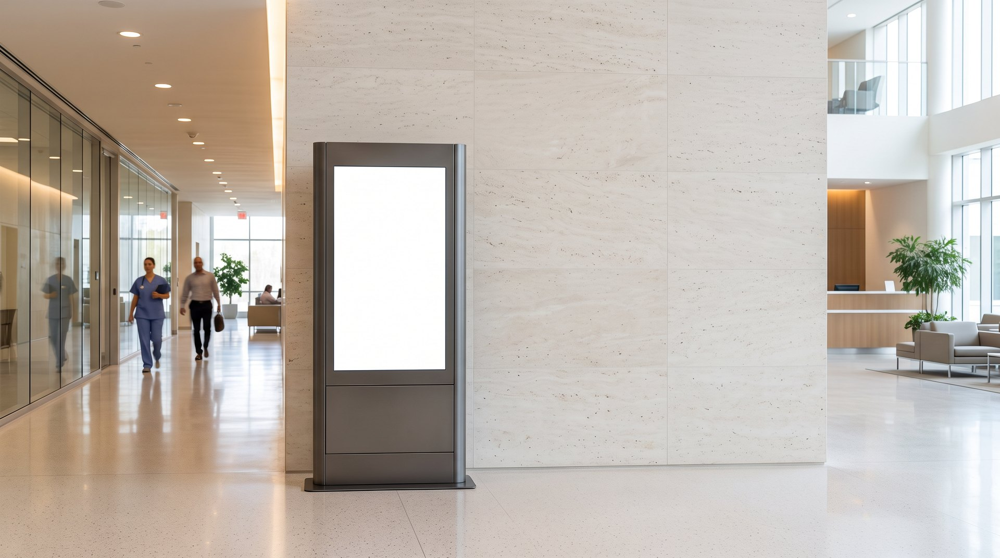
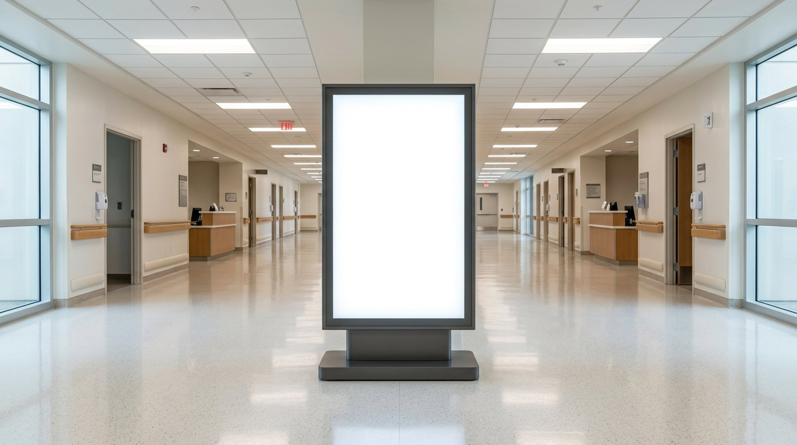
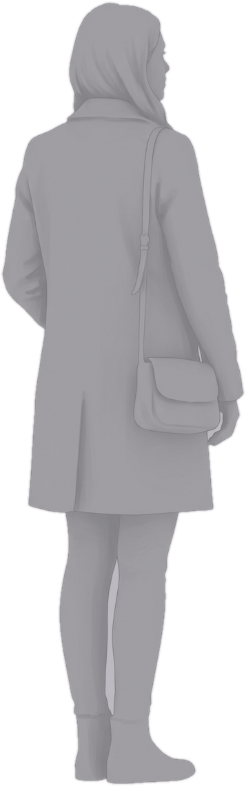
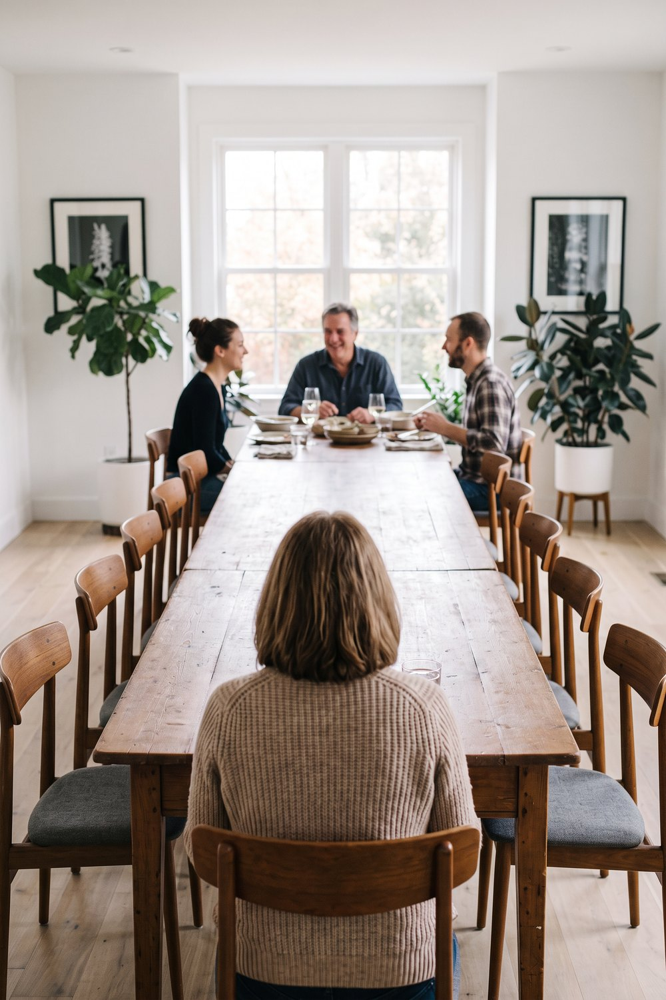
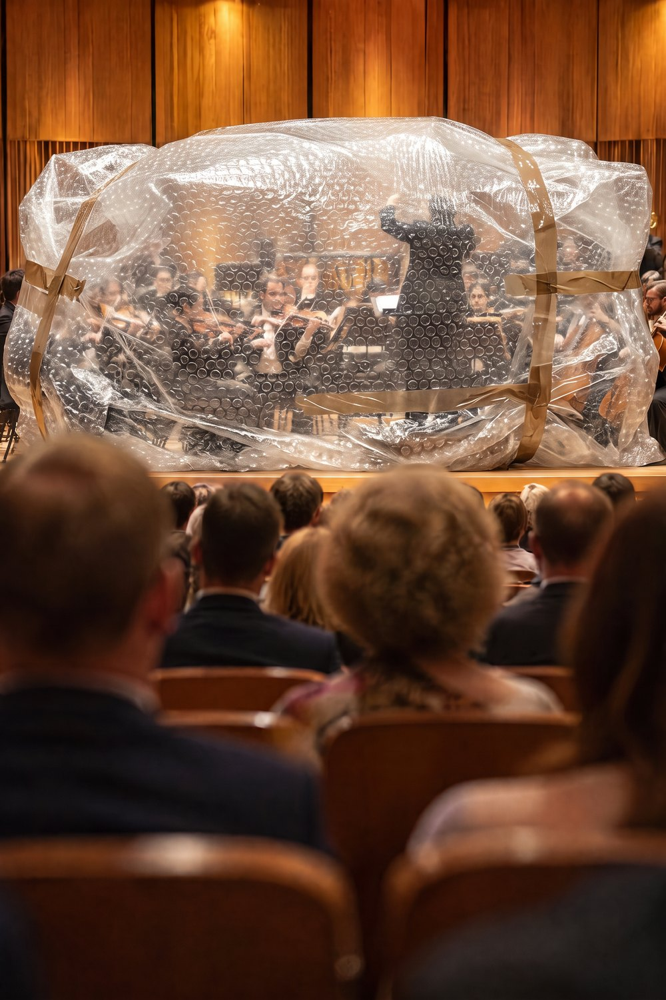
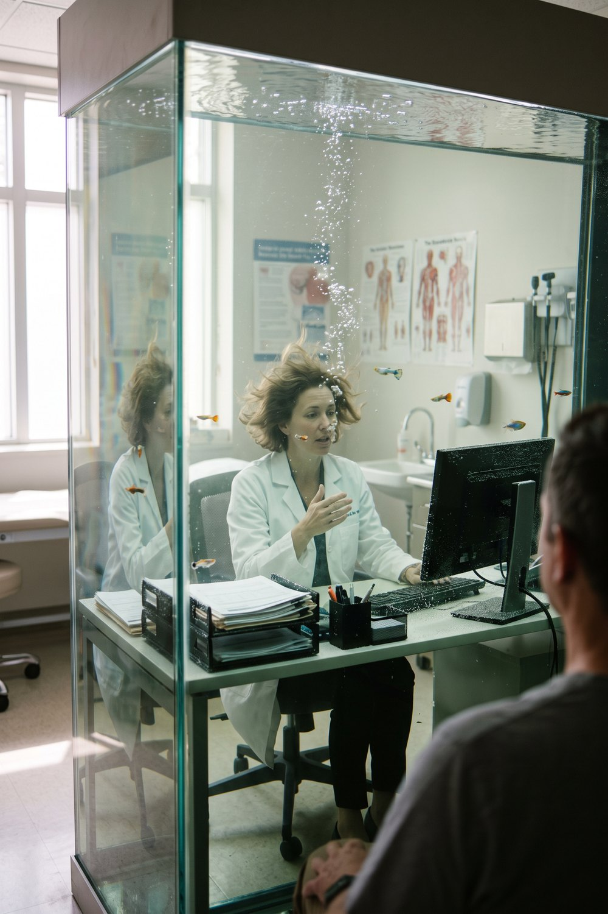
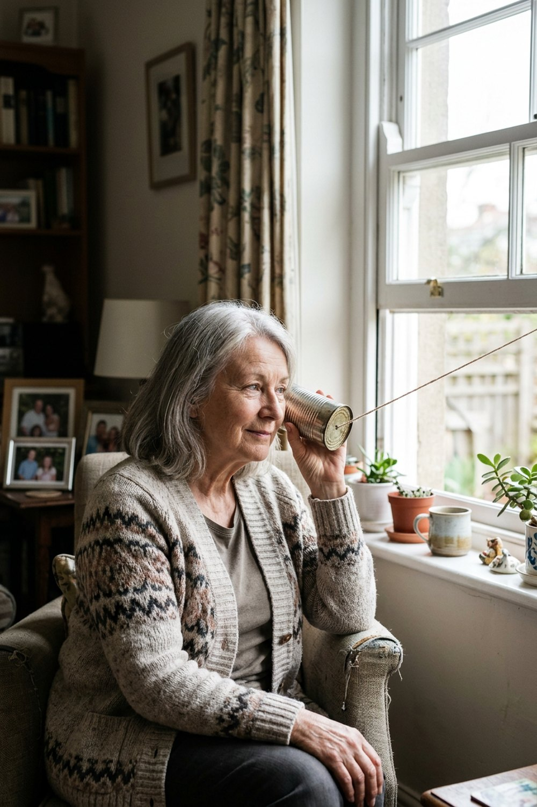

3/3

Día Mundial de la Audición
Propuesta de campaña para el 3 de marzo de 2027. Empieza con una instalación en el hospital y continúa en el móvil de cada visitante.
Punto de partida
El encargo
Concienciar
Que la gente entienda qué significa oír mal y se revise la audición, poniendo en valor el papel del o la otorrino.
Viralizar
Una idea que la gente quiera compartir y que llegue mucho más allá del hospital.
Partir de un hospital
El punto de partida es una instalación en un hospital, replicable en otros centros y adaptable a lo que permita cada espacio.
Acabar en el móvil
Todo desemboca en una landing que el usuario se lleva, juega y comparte.
Alinearnos con la OMS
Con la idea fuerza de su campaña, no esperes para revisar tu audición, y con EuroTrak: el 45 % de las personas con pérdida auditiva tarda dos años o más en revisarse.

Día Mundial de la Audición 2027La idea de fondo
La pérdida auditiva no se ve.
Vamos a hacer que se vea.
Las dos líneas traducen el oído a la vista: lo que se oye mal, se ve mal. Así cualquiera entiende en un segundo lo que vive una persona con pérdida auditiva, aunque él mismo oiga bien.
Y como todo pasa por la imagen, la campaña no necesita ruido: respeta el silencio y la calma de un espacio de cuidados y salud como es un hospital.
Común a las dos líneas
Del hospital al móvil
Impacto en el hospital
Pantalla, impresión lenticular o mupi.
QR
Una invitación clara: ¿quieres verlo?
Landing
Experiencia interactiva y test con alma de juego.
Resultado
Las señales que reconoces y qué hacer.
Compartir
Tarjeta y reto para redes y WhatsApp.
Despliegue flexible
Subimos el volumen según lo que nos deje hacer el hospital
Display o mupi con QR
La pieza engancha y el QR lleva la experiencia al móvil.
Necesita una pared o un vestíbulo.
Impresión lenticular
La imagen cambia según desde dónde la miras. Sin corriente ni mantenimiento.
Necesita un pasillo o zona de paso.
Pantalla táctil interactiva
El usuario activa el audífono y ve el antes y el después. Auriculares opcionales, como complemento.
Necesita corriente, soporte y mantenimiento.
En los tres casos el QR lleva a la misma landing. Y en ninguno hace falta sonido: la experiencia se entiende con la vista.
Línea A
Para lo que hay que oír
Si lo lees mal, lo oyes mal.
Línea A · Pruébalo
Frases importantes que vale la pena oír

Mira lo que hay que oír
EmpezarPara lo que hay que oír…
¿Quieres descubrirlo?
Llévatelo
al móvil
Línea A · En el hospital
Una pantalla en el vestíbulo, paso a paso
Así quedaría en un vestíbulo. Toca la pantalla del tótem para empezar, y pasa por encima de los puntos para ver cada elemento.
Línea A · Copys
Dos opciones de copy
Opción 1
En la pared
Para lo que hay que oír… ¿Quieres descubrirlo?
Para empezar
Mira lo que hay que oír. [Empezar]
Cierre
Sí que pasa.
Si oyes mal, no esperes.
Revisa tu audición.
Opción 2
En la pared
Oye, ¿tú cómo lo ves?
Para empezar
¿Oyes mal? ¿Quieres verlo? [Sí, quiero]
Cierre
Sí que pasa.
Si oyes mal, no pases.
Revisa tu audición.
Línea B
Sí que pasa
La misma escena, vivida de otra manera.

Sí que pasa.
Si oyes mal, te alejas.
No esperes, revisa tu audición.
El 45 % de las personas con pérdida auditiva tarda dos años o más en revisarse. EuroTrak España 2026.

Pulsa en las huellas del suelo
Línea B · En el pasillo
El mupi, in situ
Copy
Línea B · Escenas
La línea crece con nuevas escenas

En la propuestaLa sobremesa
La mesa se alarga y los amigos quedan al fondo, lejos de la conversación.

En la propuestaEl concierto
Desde la butaca, la orquesta llega envuelta en plástico de burbujas.

Para explorarLa consulta
La doctora explica los resultados… desde dentro de un acuario.

Para explorarLa llamada
Hablas con tu nieta por teléfono… y la línea es un teléfono de latas.
Común a las dos líneas
Y te lo llevas en el móvil
Primero enganchamos. Después, una experiencia que apetece hacer y compartir.
El dato que nos alinea
El 45 % tarda dos años o más en revisarse
Desde que notaron dificultades, ¿cuánto tardaron en revisarse? EuroTrak España 2026 (Anovum), n = 854.
Campaña OMS · 3 de marzo de 2027
«Hearing loss doesn’t wait. Neither should you.»
Nuestro guiño: «La pérdida auditiva no espera. Tú tampoco.»
1 · El gancho
La landing empieza con un juego: adivina cuánto se espera. Y aparece el 45 %.
2 · El resultado
Si reconoces señales: «No esperes como el 45 %».
3 · Opcional
Una línea con el dato al pie de los mupis.
Día Mundial de la Audición
Oye, no esperes.
Un minuto para reconocer las señales de la pérdida auditiva.
Adivina el dato
Desde que alguien nota que oye peor, ¿cuánto crees que tarda en revisarse?
1 año
Nada
8 años o más
Tu respuesta: 1 año
0 %
de las personas con pérdida auditiva tarda dos años o más en revisarse.
EuroTrak España 2026
Señal 1 de 7
¿Pides a menudo que te repitan las cosas?
Señal 2 de 7
En un sitio con ruido, ¿te cuesta seguir la conversación?
Un poco
Nada
Mucho
Señal 3 de 7
¿Pones la tele más alta que los demás?
Toca el nivel al que la sueles poner. La línea es donde la ponen los demás.
Señal 4 de 7
¿Oyes pitidos o zumbidos en los oídos?
Señal 5 de 7
¿Te dicen que hablas muy alto?
Señal 6 de 7
Después de una comida o una reunión, ¿acabas agotado de tanto escuchar?
Señal 7 de 7
¿Has empezado a evitar planes porque te cuesta oír?
Tu resultado
Reconoces 0 de 7 señales
El 45 % espera dos años o más. Tú no tienes por qué.
Orientativo. No sustituye una revisión auditiva.
Yo no espero.
He revisado las señales de la pérdida auditiva. ¿Y tú?
La pérdida auditiva no espera. Tú tampoco.
La landing · Pruébala
Un test para reconocer síntomas de pérdida auditiva
En línea con la campaña de la OMS: reconocer las señales y no esperar.
El dato
Adivina cuánto se tarda en revisarse y descubre el 45 %.
Las señales
Siete preguntas, cada una con su gesto: tocar, deslizar, subir el volumen.
Tu resultado
Cuántas señales reconoces y qué hacer: hablar con tu médico u otorrino.
Compartir
La tarjeta «Yo no espero» y el reto de adivinar el dato.
La landing · Las señales
Siete señales, siete gestos
| Señal | Cómo se responde |
|---|---|
| Pides a menudo que te repitan las cosas | Tocar entre tres respuestas |
| Te cuesta seguir una conversación con ruido | Deslizar de «nada» a «mucho» |
| Pones la tele más alta que los demás | Subir el volumen hasta tu nivel |
| Oyes pitidos o zumbidos | Tocar: nunca, a veces, a menudo |
| Te dicen que hablas muy alto | Sí o no |
| Acabas agotado de tanto escuchar | Tocar entre tres respuestas |
| Evitas planes porque te cuesta oír | Tocar entre tres respuestas |
Las señales y los textos se validarán con GAES y los especialistas. El resultado es orientativo y siempre invita a consultar con el médico o el otorrino. Datos con consentimiento (RGPD).
Yo no espero.
He revisado las señales de la pérdida auditiva. ¿Y tú?
La pérdida auditiva no espera. Tú tampoco.
Resultado y viralidad
Un resultado que da ganas de compartir
La tarjeta «Yo no espero»
Formato story, lista para Instagram y WhatsApp. No muestra el resultado de nadie: solo la actitud.
El reto
«¿Cuánto crees que se tarda en revisarse?» Retar a los amigos a adivinar el dato. Cada reto trae a alguien nuevo.
Lo que se lleva
Consejos para cuidar el oído y la recomendación de consultar con su médico u otorrino.
Los datos
Edad y señales reconocidas, de forma anónima y con consentimiento.
Para decidir
Las dos líneas, cara a cara
| A · Para lo que hay que oír | B · Sí que pasa | |
|---|---|---|
| La idea | Frases importantes que llegan mal | Escenas reales que se deforman |
| Versión mínima | Mupi con la frase degradada y QR | Mupi con la escena deformada y QR |
| Versión máxima | Pantalla táctil interactiva, sonido opcional | Recorrido de mupis lenticulares por el hospital |
| Lo que más luce | El gesto «audífono ON» | La imagen: muy fotografiable y compartible |
| Cómo crece | Nuevas frases, rápido y económico | Nuevas escenas, con foto o IA |
| Producción | Baja: tipografía y animación | Media: imagen e impresión lenticular |
Proponemos elegir una de las dos, para que la campaña tenga una sola idea fuerte y reconocible.
Calendario
Cuenta atrás hasta el 3 de marzo
días para el lanzamiento
La impresión lenticular y los permisos del hospital son lo que más tiempo pide: conviene elegir la línea antes de que acabe noviembre.
Finales de noviembre
Elección
Línea, formatos y copys.
Diciembre
Diseño
Frases o escenas, look & feel y estructura del test.
Enero
Producción
Imágenes, animación, locuciones y landing.
Febrero
Montaje
Impresión, con plazo a confirmar, y pruebas de la landing.
3 de marzo
Lanzamiento
Instalación en el hospital y difusión en redes.
Marzo y abril
Réplica
Otros centros y seguimiento de resultados.
Próximos pasos
Lo que necesitamos de GAES
Hospital y permisos
Qué centro, qué espacios y qué podemos instalar.
Datos y estudios
Validar las señales del test y qué datos de EuroTrak podemos citar.
Contenido final
Consejos y recursos de la Fundación para cerrar la experiencia.
Legal y datos
Textos de consentimiento, dónde se guardan los datos y quién los gestiona.
Marca
Logos y guía de la Fundación GAES Solidaria en alta resolución.
Elección de línea
A o B, y el tono de los copys.
3/3
Sí que pasa.
La pérdida auditiva no espera.
Revisa tu audición.
Gracias.